Windows Active Directory Practice Lab on Azure
This project documents the step-by-step creation of a Windows Active Directory (AD) practice lab hosted entirely on Azure. The goal was to simulate a realistic corporate environment ("Gotham City") with a Domain Controller and multiple client workstations to practice AD administration, user management, and network configuration.
Lab Architecture & Resources
The lab is contained within a single Resource Group (ADLab) and Virtual Network (ADLabNet - 10.0.1.0/24). It consists of three primary Virtual Machines:
- GOTHAM-DC: Windows Server 2019 (The Domain Controller)
- THEBATMAN: Windows 10 Enterprise (User: Bruce Wayne)
- WAYNEENT: Windows 10 Enterprise (User: Lucius Fox)
Domain controller
- VM name : GOTHAM-DC
- Image : Windows Server 2019 Datacenter
- Username : anjula
- Password : labuser123Anjula
- Vnet : ADLabNet (10.0.1.0/24)
- Connection : RDP (3389)
User machine 1
- VM name : THEBATMAN
- Image : Windows 10 Enterprise
- Username : bwayne
- Password : myPassword01
- Vnet : ADLabNet (10.0.1.0/24)
- Connection : RDP (3389)
User machine 2
- VM name : WAYNEENT
- Image : Windows 10 Enterprise
- Username : lfox
- Password : myPassword02
- Vnet : ADLabNet (10.0.1.0/24)
- Connection : RDP (3389)
Connecting to DC VM
RDP into GOTHAM-DC with Username : anjula & Password : labuser123Anjula
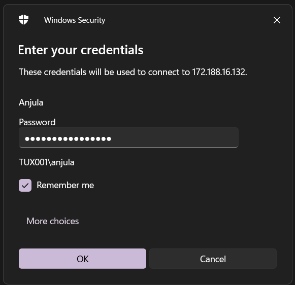Configuring services
Launch Server manager > Add roles and features > Add roles and features wizard
- Server Roles : Active Directory Domain Service
Install service.
Choose “Promote this server to a domain controller”.
Promoting VM to domain controller
Active directory domain service configuration wizard > Deployment configuration > Add a new forest
- Root domain name : GOTHAM.local
- Forest function level : Windows Server 2016
- Domain function level : Windows Server 2016
- Password : labuser123Anjula
- NetBIOS domain name : GOTHAM
Reboot machine.
RDP into GOTHAM-DC with domain credentials; Username : GOTHAM\anjula & Password : labuser123Anjula
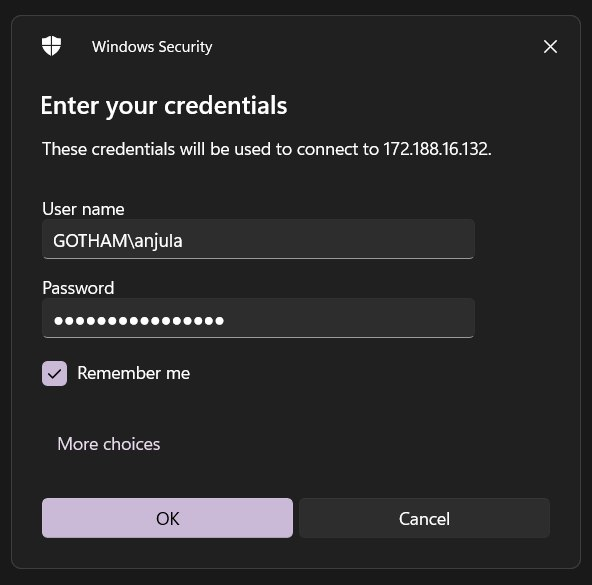Configuring certificate services
Launch Server manager > Add roles and features > Add roles and features wizard
- Server roles : Active Directory Certificate Services
Install service.
Choose “Configure Active Directory certificate services on the destination server”.
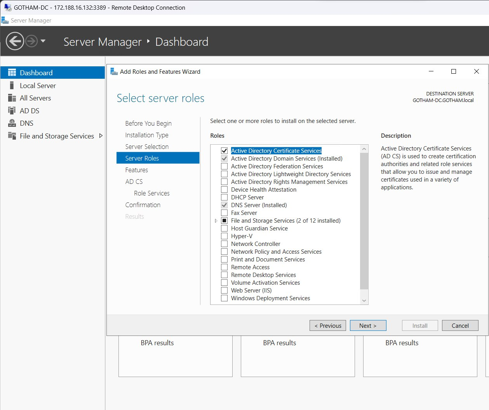 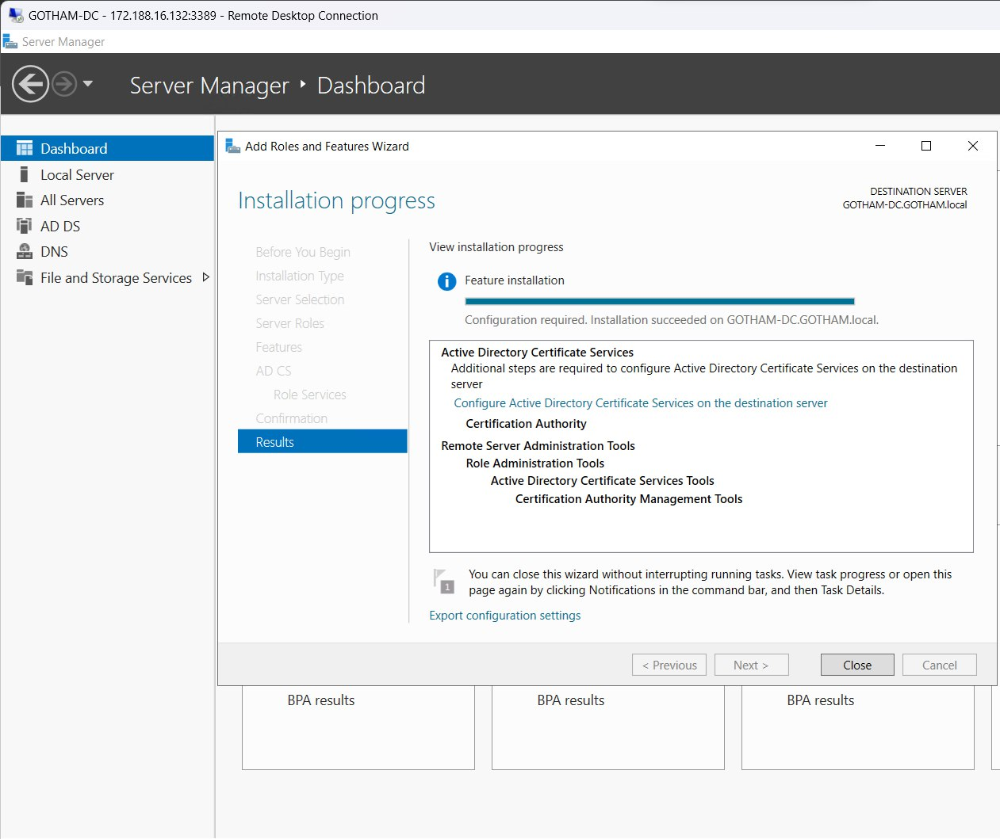AD CS configuration wizard >
- Credentials : GOTHAM\anjula
- Role services : Certification Authority
- Setup type : Enterprise CA
- CA type : Root CA
- Private key > Validity period : 99 years
Configure and reboot machine.
Setting up a share
This PC > C:\ Drive > Create new folder “hackme”
Launch Server manager > File and storage services > Shares > Tasks > New share wizard >
- File share profile : SMB Share - Quick
- Share location > custom path : C:\hackme
- Share name : hackme
Create and close.
Creating domain users
Launch Server manager > Tools > Active Directory users and computers > MARVEL.local
Create new Organizational unit (OU) “Groups”
Move every entry except “Guest” and “anjula” from Users to Groups
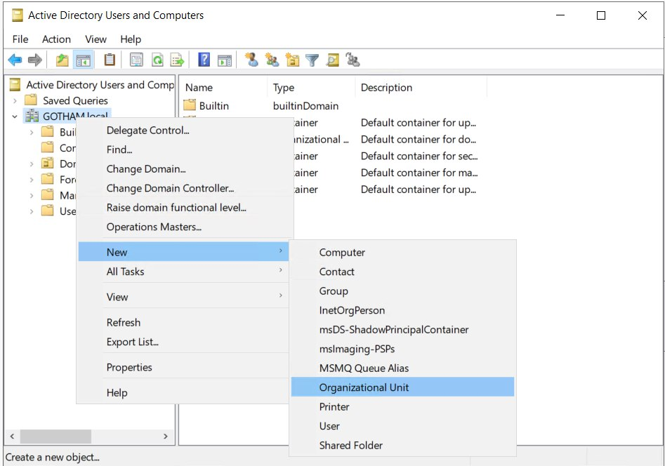 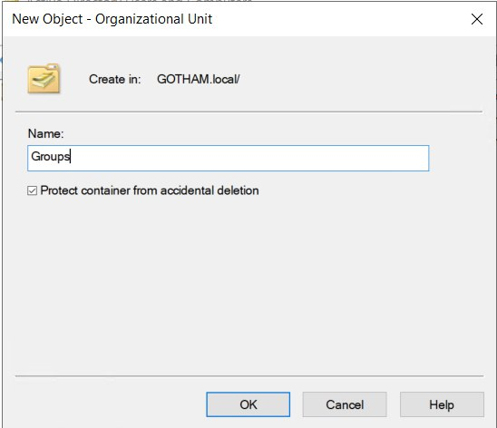 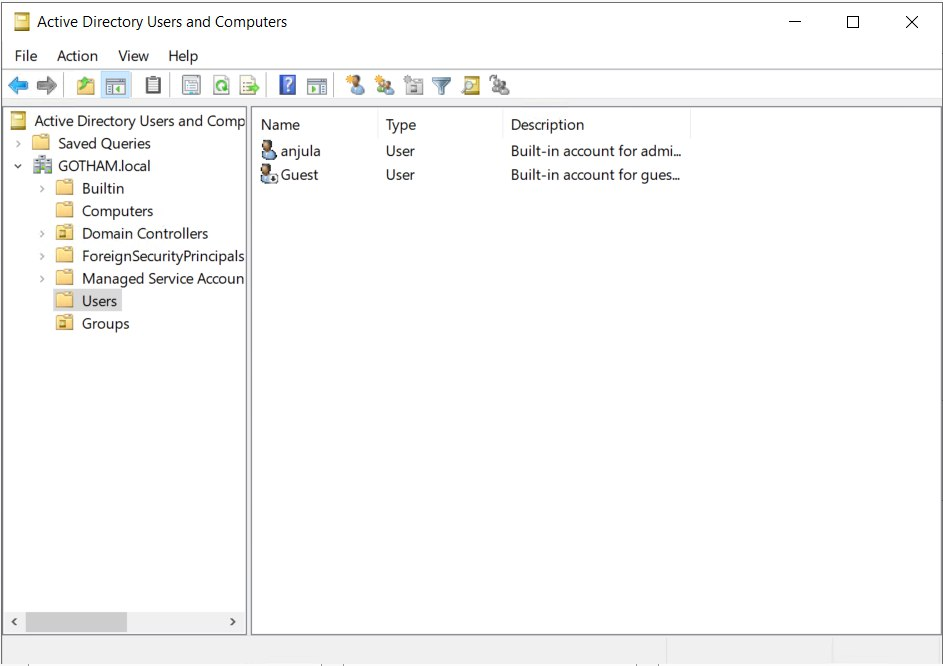MARVEL.local > Users >
Create new user
- First name : Bruce
- Last name : Wayne
- User login name : bwayne
- Password : Password1
- Check “Password never expires”
Create another user
- First name : Lucious
- Last name : Fox
- User login name : lfox
- Password : Password2
- Check “Password never expires”

Copy user “anjula” to create another user
- First name : SQL
- Last name : Service
- User login name : SQLService
- Password : MYpassword123#
SQLService > properties >
- Description : “Password is MYpassword123#”
Setting up SPNs
Launch Command prompt as administrator.
Setup SPN for SQLService account
setspn -a GOTHAM-DC/SQLService.GOTHAM.local:60111 GOTHAM\SQLServiceConfirm SPN.
setspn -T GOTHAM.local -Q */*Domain machine IP address
Command prompt >
ipconfig- IP : 10.0.1.4/24
Connecting to user machines
RDP into THEBATMAN with Username : bwayne and Password : myPassword01
Launch File explorer > Network
Turn on Network discovery.
Launch Settings > Network & internet > Ethernet > Change adapter settings
Choose Ethernet > properties > Internet Protocol version 4 (TCP/IPv4)
- Preferred DNS server : 10.0.1.4
RDP connection will be lost. Reconnect to the same user “bwayne”
Launch Settings > Accounts > Access work or school > Connect
Choose “Join this device to a local Active Directory domain”.
- Domain name : GOTHAM.local
Join a domain >
- User : anjula
- Password : labuser123Anjula
Restart machine.
RDP into WAYNEENT with Username : lfox and Password : myPassword02
Repeat the same process above.
Configuring Domain users to user machines
Launch GOTHAM-DC > Server manager > Tools > Active Directory users and computers > MARVEL.local > Computers
Both user computers “THEBATMAN” and “WAYNEENT” is listed under the domain.
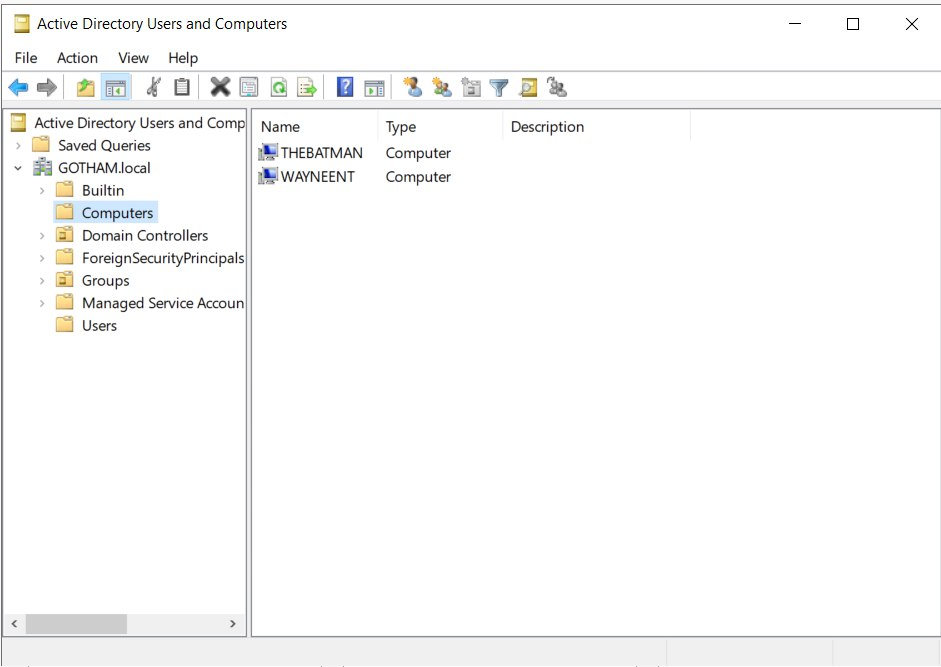RDP into THEBATMAN with admin credentials; Username : GOTHAM\anjula and Password : labuser123Anjula
Go to Computer management > Local users and groups > Groups > Administrators.
Choose “Add”
Select Users, computers, service accounts or groups >
- Enter object names to select : bwayne
Check names, then apply.
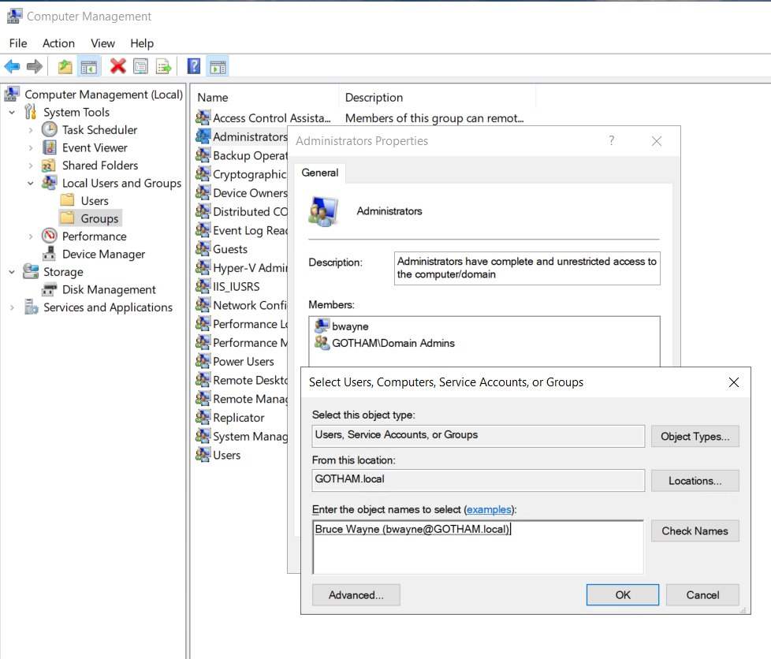 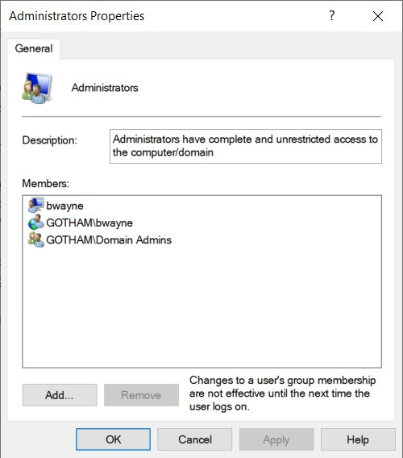RDP into WAYNEENT with admin credentials; Username : GOTHAM\anjula and Password : labuser123Anjula
Go to Computer management > Local users and groups > Groups > Administrators.
Choose “Add”
Select Users, computers, service accounts or groups >
- Enter object names to select : lfox
Check names & choose “Add” again
- Enter object names to select : bwayne
Check names, then apply.
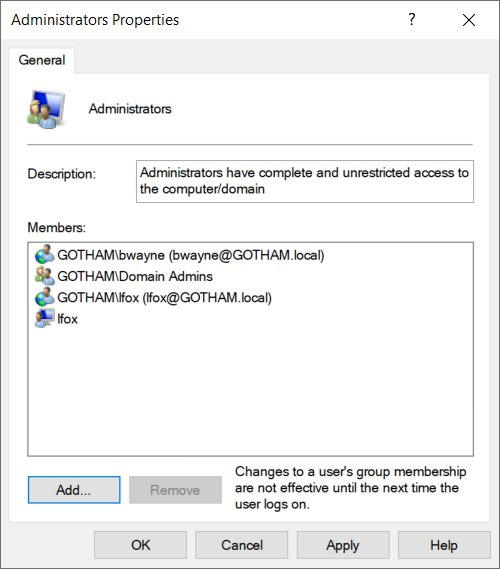Re-connecting to machines with Domain user accounts
RDP into THEBATMAN machine with;
- Username : GOTHAM\bwayne
- Password : Password1
RDP into WAYNEENT machine with both;
- Username : GOTHAM\bwayne
- Password : Password1
and
- Username : GOTHAM\lfox
- Password : Password2
Challenges & Lessons Learned
Building this lab in the cloud highlighted a few specific networking nuances:
- DNS Resolution: The most critical step was manually setting the DNS server on the client VMs to the DC's internal IP (10.0.1.4). Without this, the clients would default to Azure's public DNS and fail to resolve
GOTHAM.local. - RDP Interruptions: When changing the DNS settings on the network adapter, the RDP connection momentarily drops. It's important to be patient and wait for the connection to re-establish before panicking!
- Naming Conventions: Planning the NetBIOS name and domain structure (like splitting OUs early) saved a lot of headache later when managing permissions.